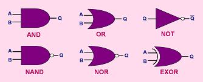

Digital Logic
Gates
Digital
logic gates,
which are also
known as
combinational
logic gates
or simply 'logic gates', are digital IC's whose
output
at any time is determined by the
states
of its
inputs
at that time. Since logic gates are digital IC's, their input and
output signals can only be in one of two possible digital states, i.e.,
logic '0'
or logic
'1'.
Thus, the logic state in which the output of a logic gate will be put in
depends on the logic states of each of its individual inputs.
The primary application of logic gates is
to implement
'logic' in the flow of
digital signals in a digital circuit.
Logic in its ordinary sense is defined as a branch of philosophy that
deals with what is
true
and
false,
based on what other things are true and false. This essentially is the
function of logic gates in digital circuits - to determine which outputs
will be true or false, given a set of inputs that can either be true
(logic '1') or false (logic '0').
The response output (usually
denoted by Q) of a logic gate to any
combination
of inputs may be tabulated into what is known as a
truth table. A truth table shows each possible combination of inputs
to a logic gate and the combination's corresponding output. Table 1,
which describes the various types of logic gates, provides a truth table
for each of them as well.
Interestingly,
the operation of logic gates in relation to one another may be represented
and analyzed using a branch of mathematics called
Boolean Algebra
which, like the
common algebra, deals with manipulation of expressions to solve or
simplify equations. Expressions used in Boolean Algebra are called,
well, Boolean expressions.
Table
1. Logic Gates and their Properties
|
Gate |
Description |
Truth Table |
|
AND
Gate |
The
AND gate
is a logic gate that gives an output of '1' only when all of its
inputs are '1'. Thus, its output is '0' whenever at least one
of its inputs is '0'. Mathematically,
Q = A · B. |
|
A |
B |
Output Q |
|
0 |
0 |
0 |
|
0 |
1 |
0 |
|
1 |
0 |
0 |
|
1 |
1 |
1 |
|
|
OR
Gate |
The
OR gate
is a logic gate that gives an output of '0' only when all of its inputs
are '0'.
Thus, its output is '1' whenever at least one of its inputs is '1'.
Mathematically,
Q = A + B. |
|
A |
B |
Output Q |
|
0 |
0 |
0 |
|
0 |
1 |
1 |
|
1 |
0 |
1 |
|
1 |
1 |
1 |
|
|
NOT
Gate |
The
NOT
gate is a logic gate that gives an output
that is opposite the state of its input.
Mathematically,
Q =
A. |
|
|
NAND Gate |
The
NAND
gate is
an AND gate with a NOT gate at its end.
Thus, for the same combination of inputs, the output of a NAND gate
will be opposite that of an AND gate.
Mathematically,
Q =
A · B. |
|
A |
B |
Output Q |
|
0 |
0 |
1 |
|
0 |
1 |
1 |
|
1 |
0 |
1 |
|
1 |
1 |
0 |
|
|
NOR
Gate |
The
NOR
gate is an OR gate
with a NOT gate at its end.
Thus, for the same combination of inputs, the output of a NOR gate
will be opposite that of an OR gate.
Mathematically,
Q =
A + B. |
|
A |
B |
Output Q |
|
0 |
0 |
1 |
|
0 |
1 |
0 |
|
1 |
0 |
0 |
|
1 |
1 |
0 |
|
|
EXOR
Gate |
The
EXOR gate
(for 'EXclusive
OR' gate) is a logic gate that gives an output of '1' when only one of
its inputs is '1'. |
|
A |
B |
Output Q |
|
0 |
0 |
0 |
|
0 |
1 |
1 |
|
1 |
0 |
1 |
|
1 |
1 |
0 |
|
There are
several kinds of logic gates, each one of which performs a specific
function. These are the: 1)
AND
gate; 2)
OR
gate; 3)
NOT
gate; 4)
NAND
gate; 5)
NOR
gate; and 6)
EXOR
gate. Table 1 above presents these and their characteristics.
Logic gates
may be thought of as a combination of
switches.
For instance, the
AND
gate, whose output can only be '1' if all its inputs are '1', may be
represented by switches connected in
series,
with each switch representing an input.
All
the switches
need to be activated and conducting (equivalent to all the inputs of the
AND gate being at logic '1'), for current to flow through the circuit
load (equivalent to the output of the AND gate being at logic '1').
An
OR
gate, on the other hand, may be represented by switches connected in
parallel,
since
only one
of these parallel switches need to turn on in order to energize the
circuit load.
In Boolean
Algebra, the
AND operation
is represented by
multiplication,
since the only way that the result of multiplication of a combination of
1's and 0's will be equal to '1' is if all its inputs are equal to
'1'. A single '0' among the multipliers will result in a product
that's equal to '0'. The Boolean expression for 'A AND B' is
similar to the expression commonly used for multiplication, i.e., A·B.
The
OR operation,
on the other hand, is represented by
addition
in Booelean Algebra. This is because the only way to make the result of
the addition operation equal to '0' is to make all the inputs equal to
'0', which basically describes an 'OR' operation. The Boolean
expression for 'A OR B' is therefore A+B.
The
NOT operation
is usually denoted by a line above the symbol or expression that is
being negated:
A = NOT(A). The
NAND
operation
is simply an AND operation followed by a NOT operation. The
NOR operation
is simply an OR operation followed by a NOT operation. The symbols
used for logic gates in electronic circuit diagrams are shown in Figure
1.
|
 |
|
Figure 1.
Logic Gate Symbols |
One of the
most useful theorems used in Boolean Algebra is De Morgan's Theorem,
which states how an AND operation can be converted into an OR operation,
as long as a NOT operation is available.
De
Morgan's Theorem
is usually expressed in two equations as follows:
(A·B)
= A +
B;
and
(A+B) =
A
·
B.
De Morgan's
Theorem has a practical implication in digital electronics - a designer
may eliminate the need to add more IC's to the design unnecessarily,
simply by
substituting
gates with the equivalent combination of other gates whenever possible.
Since NAND and NOR gates can be used as NOT gates, de Morgan's Theorem
basically implies that any Boolean operation may be simulated with
nothing but NAND or NOR gates. This is why NAND and NOR gates are
also called
universal
gates.
See Also:
RTL /
DTL / TTL; Boolean
Algebra
HOME
Copyright
©
2004
www.EESemi.com.
All Rights Reserved.